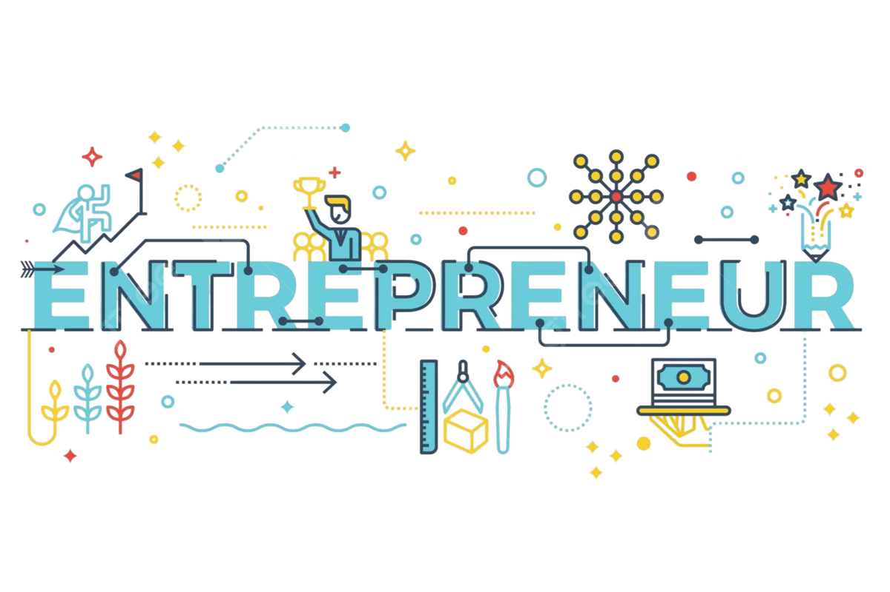
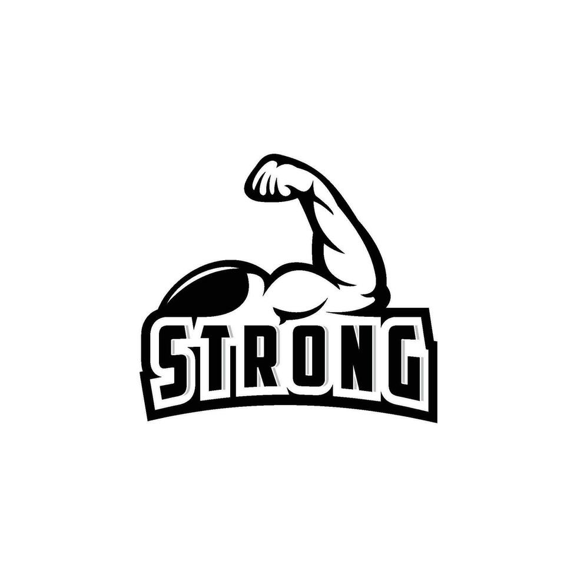
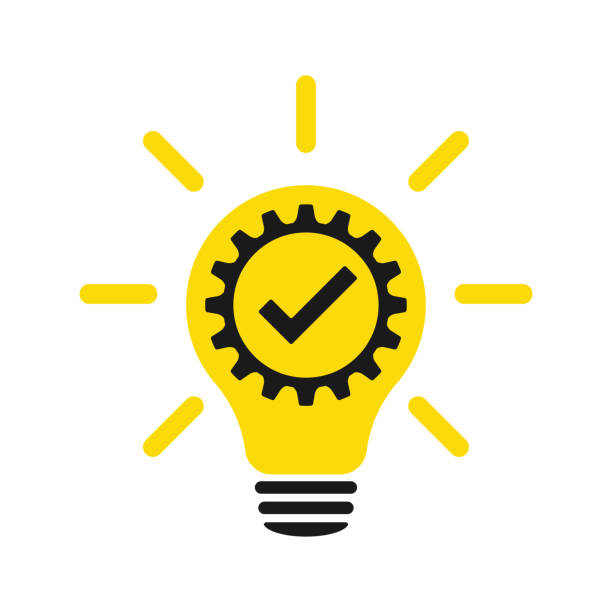
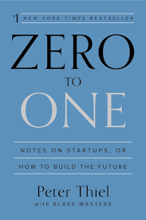
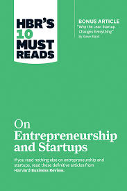
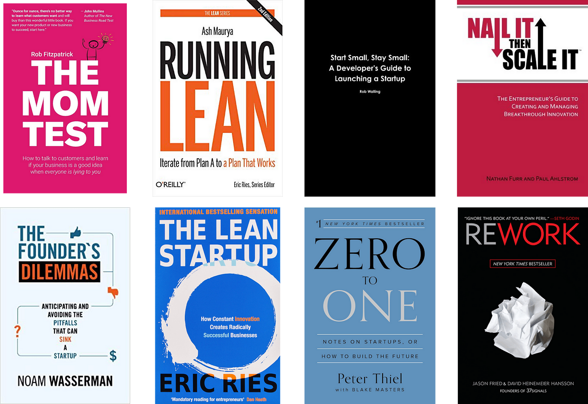

The Entrepreneur's Mindset: Risk, Resilience & Reward
What Is the Entrepreneurial Mindset about Risk & Failure?:
Introduction-
Entrepreneurs Brief content- Set the stage: Why risk and failure scare most people
- Briefly highlight how entrepreneurs seem to "Love" what others fear
Entrepreneurs Redefine Risk
- They don't see risk as danger — they see it as opportunity Example: Starting a Startup Business vs. staying in a "safe" job.
- They focus on calculated risks, not blind risks
Failure Is Not Final, It's Feedback
- Entrepreneurs treat failure as part of the process, not the end Famous examples (e.g., Elon Musk's SpaceX rocket failures)
- They extract lessons and pivot quickly
Separate Ego From Outcome
- Personal identity isn't tied to success or failure
- Business failure =/= personal failure
- Mindset: "I failed at this attempt" vs. "I am a failure"
Risk Management > Risk Avoidance
- Entrepreneurs build systems to manage Risk rather than avoid them
- Techniques like MVPs (Minimum Viable Products), market testing, and agile approaches
Embracing Uncertainty Is a Skill
- They are comfortable making decisions with incomplete information
- Mindset: "If I wait for everything to be perfect, I'll miss the opportunity"
Emotional Resilience and Optimism
- High levels of resilience and a future-focused attitude
- They visualize success even while facing failure
Entrepreneurs don't just start businesses—they think differently. They're wired to see opportunity where others see obstacles, and they move forward even when the path is unclear.
At the core of this mindset lie three powerful qualities:
->Risk-taking
->Resilience
->The pursuit of reward
Entrepreneurs make decisions without guarantees. They invest time, money, and energy into ideas that may or may not work.
But here's the key: they don't fear Failures they calculate it.
- They assess risks, not avoid them.
- They experiment and pivot quickly when things don't work.
- They understand that growth often lies just beyond their comfort zone.
Resilience: The Power to Keep Going:
- Power
The entrepreneurial journey is rarely smooth. Setbacks, rejection, financial pressure—they're part of the package. What separates successful entrepreneurs is how they respond when things fall apart.
- They bounce back stronger.
- They learn from mistakes instead of being crushed by them.
- They believe in the long game and are not discouraged by short-term losses.
Reward: More Than Just Money:
- Yes, financial gain is a major driver. But the real reward is often deeper:
- Freedom: The ability to control your own time and decisions.
- Impact: Creating something that improves lives or solves problems.
- Fulfillment: Turning passion into a profession.
- Entrepreneurs measure success not just in revenue, but in meaning.
Final Thoughts:
The entrepreneurial mindset isn't exclusive to CEOs or founders—it's a way of thinking that anyone can adopt. Whether you're launching a startup or simply taking control of your career, embracing risk, building resilience, and aiming for reward can transform not just what you do, but who you become.
 Best Books To Read:
Best Books To Read:
Best to read to understand about Entrepreneurs
-   
From Risk to Reward:The Entrepreneur's Path:
Risk. Resilience. Reward. These are not just words; they are the backbone of every entrepreneurial story. Those who dare to think differently, push through setbacks, and stay focused on their vision are the ones who truly change the world — and it all begins with a shift in mindset.
NOTE:
"I hope my content finds you well and I wish you great success ahead"